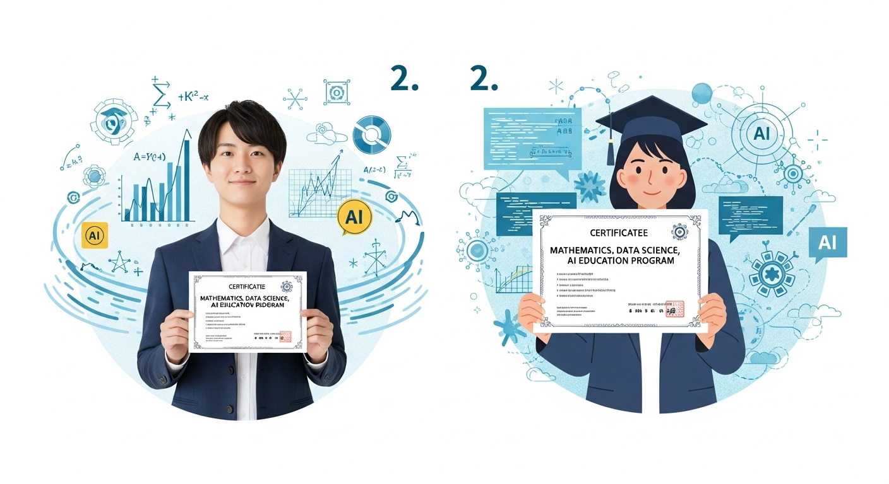
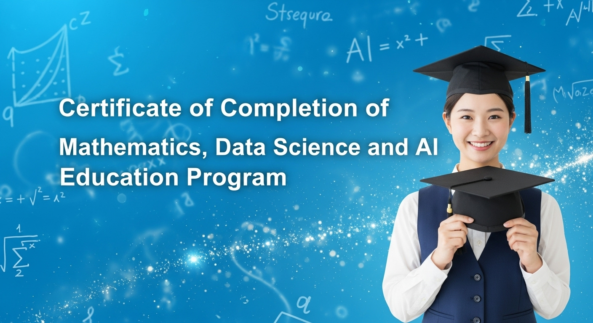
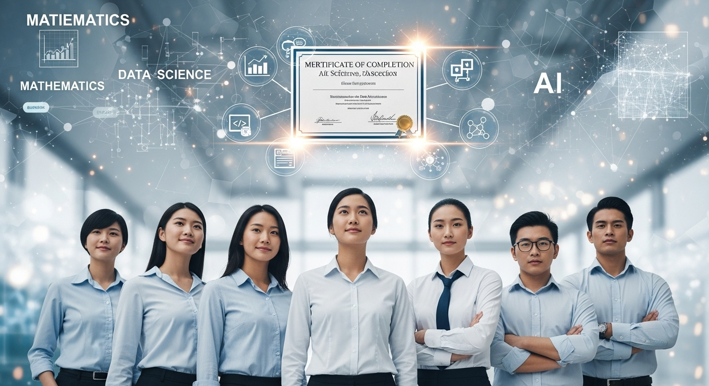
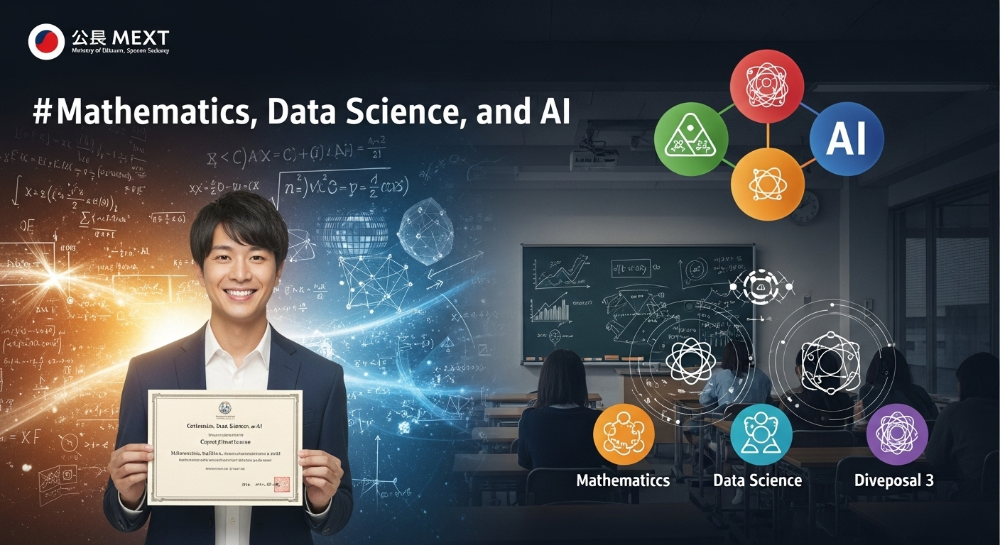
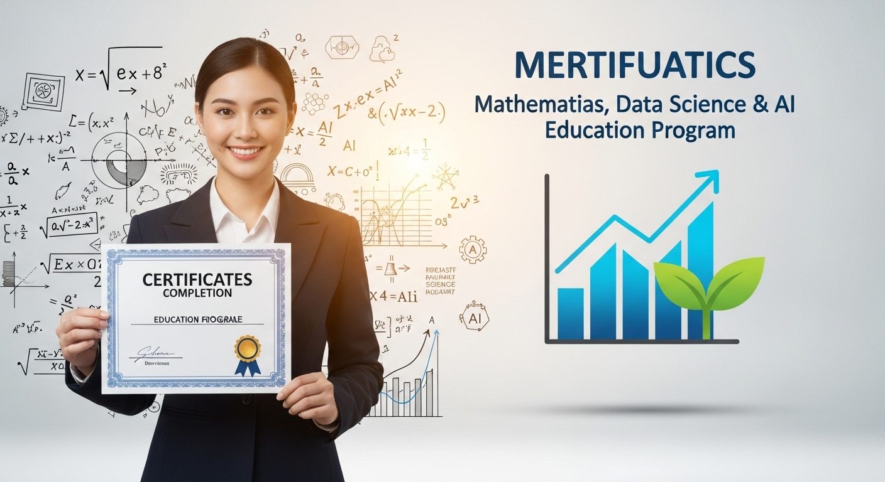
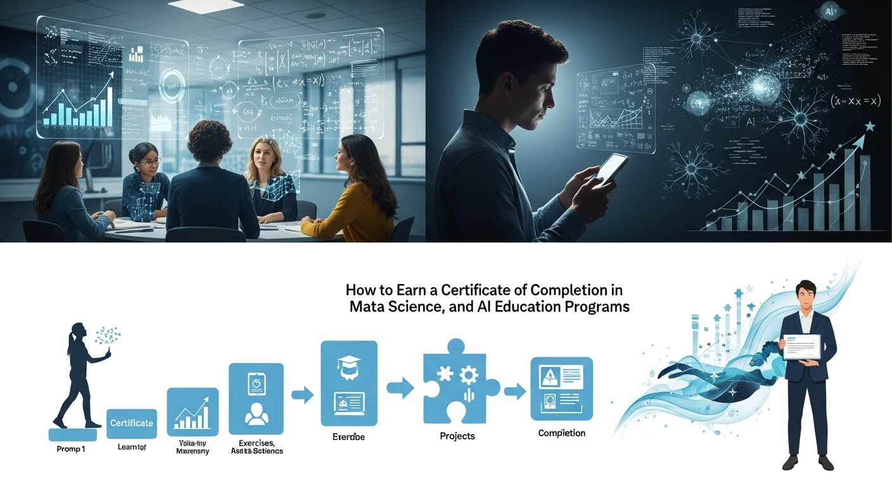

数理・データサイエンス・AI教育プログラム修了証で市場価値向上！文系でも実践スキルを学ぶ

導入

現代社会は、まさに「データの時代」と言えるでしょう。スマートフォンを片手に情報を検索し、オンラインで買い物をし、SNSで友人と繋がる。私たちの日常のあらゆる場面で、膨大なデータが生まれ、活用されています。そして、そのデータを分析し、新たな価値を生み出す「データサイエンス」や、人間の知的な振る舞いをコンピューターで再現する「AI（人工知能）」の技術は、もはや一部の専門家だけのものではなく、あらゆるビジネスや学問の領域で不可欠な存在となりつつあります。
「でも、データサイエンスやAIなんて、理系の専門家やプログラマーの世界の話でしょ？」
「文系の自分には、数学やプログラミングは難しすぎる…」
もしあなたが今、そう感じているのなら、この記事はまさにあなたのためにあります。実は今、国を挙げて、文系・理系を問わず、すべての大学生がデータサイエンスやAIの基礎を学ぶための取り組みが進められていることをご存知でしょうか。それが、文部科学省が認定する「数理・データサイエンス・AI教育プログラム」です。
このプログラムは、これからの社会を生きる上で必須の教養となるデータサイエンスのスキルを、体系的に学ぶことができる画期的な制度です。そして、プログラムを修了した学生には、その学びの証として「修了証」や「オープンバッジ」と呼ばれるデジタル証明書が授与されます。これは、あなたの学習意欲とスキルを客観的に証明し、就職活動や将来のキャリアにおいて、非常に強力な武器となり得るものです。
この記事では、そんな「数理・データサイエンス・AI教育プログラム」の全貌を、どこよりも詳しく、そして優しく解説していきます。
- そもそも、このプログラムって何？修了証にはどんな価値があるの？
- 文系の私が学ぶ意味って本当にあるの？どんなメリットがあるんだろう？
- プログラムにはどんな種類があって、自分はどれを選べばいい？
- 実際に学ぶ上での注意点や、学習の難易度はどれくらい？
- どうすれば修了証を取得できるの？具体的な流れを知りたい。
こうした疑問や不安に一つひとつ丁寧にお答えしながら、あなたが新しい学びへの一歩を踏み出すお手伝いをします。データサイエンスやAIは、決して難しい専門用語の羅列ではありません。それは、世の中の事象を客観的に理解し、課題を解決するための「新しい思考の道具」です。そして、その道具は、文系ならではの課題発見能力やコミュニケーション能力と掛け合わせることで、何倍もの力を発揮します。
この記事を読み終える頃には、あなたの「難しそう」という不安は、「面白そう」「挑戦してみたい」という期待に変わっているはずです。さあ、一緒に新しい時代の扉を開き、あなた自身の市場価値を高めるための学びの旅を始めましょう。
数理・データサイエンス・AI教育プログラムとは？修了証の価値

まずは、このプログラムの全体像を掴むところから始めましょう。「数理・データサイエンス・AI教育プログラム」と聞くと、少し堅苦しい印象を受けるかもしれませんが、その本質は非常にシンプルです。これからの社会で誰もが必要とする「データを読み解き、活用する力」を、大学教育の中でしっかりと身につけてもらうための仕組み、と理解してください。ここでは、その概要と、修了証が持つ本当の価値について、深く掘り下げていきます。
文科省認定プログラムの概要
このプログラムがなぜ今、これほどまでに注目されているのか。その背景には、国全体の大きな戦略があります。現代は、IoT（モノのインターネット）やビッグデータ、AIといった技術が社会のあり方を根本から変える「第四次産業革命」の時代と呼ばれています。このような変化の激しい時代において、日本が国際的な競争力を維持し、持続的に発展していくためには、産業界だけでなく、社会のあらゆる分野でデータを活用できる人材を育成することが急務となっています。
この課題意識のもと、政府は「AI戦略2019」などを策定し、デジタル社会の「読み・書き・そろばん」である「数理・データサイエンス・AI」の知識とスキルを、全国の大学・高専生が身につけられるような教育体制を構築することを目標に掲げました。その具体的な施策として生まれたのが、文部科学省による「数理・データサイエンス・AI教育プログラム認定制度」です。
この制度は、大学や高等専門学校が実施する教育プログラムの中から、政府が示す標準的なカリキュラムやモデルケースに準拠した、質の高いプログラムを文部科学省が公式に「認定」するというものです。つまり、この認定を受けているプログラムは、国が「これからの時代に必要なスキルが学べますよ」とお墨付きを与えた、信頼性の高い教育プログラムであると言えます。
プログラムは大きく分けて2つのレベルが設定されています。一つは、文系・理系を問わず、すべての学生が身につけるべき基礎的な素養を学ぶ「リテラシーレベル」。もう一つは、リテラシーレベルの知識を基に、より実践的・専門的なスキルを学ぶ「応用基礎レベル」です。この2段階の設計により、初心者から専門家を目指す人まで、それぞれのレベルや目標に合わせて学ぶことが可能になっています。この認定制度は2021年度から開始され、現在では全国の多くの大学がこのプログラムを導入し、学生たちに新しい学びの機会を提供しています。
修了証（オープンバッジ）がキャリアにもたらす価値
さて、このプログラムを所定の要件を満たして修了すると、大学から「修了証」が発行されます。近年では、紙の証明書だけでなく、「オープンバッジ」というデジタルの証明書で授与されるケースが増えています。この修了証やオープンバッジは、単に「授業を受けました」という記念品以上の、非常に大きな価値を秘めています。
まず、オープンバッジとは何かを少し説明しましょう。これは、国際的な技術標準規格に基づいて発行されるデジタルの証明書で、あなたが「いつ、どこで、何を学び、どのようなスキルを身につけたか」という情報を画像データの中に埋め込んだものです。このバッジは、偽造や改ざんが非常に困難であり、信頼性が高いのが特徴です。そして何より、LinkedInなどのビジネスSNSのプロフィールに掲載したり、メールの署名に付け加えたり、オンラインの履歴書に貼り付けたりと、デジタル上で簡単に共有・公開することができます。
では、この修了証（オープンバッジ）が、あなたのキャリアに具体的にどのような価値をもたらすのでしょうか。
- スキルの「可視化」と「客観的証明」
最大の価値は、目に見えない「スキル」や「学習意欲」を、誰の目にも明らかな形で証明できる点にあります。就職活動の面接で「データサイエンスに興味があります」と口で言うのと、「文部科学省認定の数理・データサイエンス・AI教育プログラムを修了し、その証としてオープンバッジを取得しました」と具体的な証拠を示しながら話すのとでは、採用担当者に与える印象は全く異なります。後者は、あなたの主張に客観的な裏付けと信頼性を与え、主体的に学ぶ姿勢を持っている人材であることを強力にアピールできます。 - 企業からの評価向上
DX（デジタルトランスフォーメーション）を推進する多くの企業にとって、データリテラシーを持つ人材は喉から手が出るほど欲しい存在です。特に、専門のデータサイエンティストだけでなく、営業、マーケティング、企画、人事といったあらゆる職種で、データを活用して業務を改善できる人材の需要が高まっています。この修了証は、あなたがそうした素養を持つ「DX推進人材」としてのポテンシャルを秘めていることを示す、いわばパスポートのような役割を果たします。採用担当者は、あなたがこれからの企業活動に貢献できる基礎能力を持っていると判断しやすくなるのです。 - キャリアの選択肢の拡大
このプログラムで得られる知識は、特定の業界や職種に限定されるものではありません。むしろ、あらゆる分野で応用可能な汎用性の高いスキルです。そのため、修了証を持っていることは、あなたが将来選べるキャリアの道を大きく広げることに繋がります。これまで考えてもみなかった業界や、新しい職種への挑戦も視野に入ってくるかもしれません。
このように、修了証（オープンバッジ）は、あなたの努力と学びの成果を社会に示すための強力なツールであり、未来のキャリアを切り拓くための大切な資産となるのです。
文系出身者が学ぶ意義とメリット
この記事を読んでいる文系学生や文系出身の社会人の方の中には、「やはり、この分野は理系の人のものではないか」という不安がまだ残っているかもしれません。しかし、断言します。このプログラムは、文系出身者にこそ、大きな意義とメリットをもたらします。
なぜなら、データサイエンスやAIが本当に価値を発揮するのは、データ分析の技術そのものではなく、その技術を使って「現実社会のどのような課題を解決するか」という目的があってこそだからです。そして、その「課題を発見する力」や「物事の背景を多角的に理解する力」「分析結果を人々に分かりやすく伝え、合意を形成する力」といった能力は、まさに文系の学問を通じて培われるものです。
考えてみてください。
- 歴史学を学んだあなたは、過去の膨大な文献データから社会の変動パターンを読み解く「テキストマイニング」という手法に、新たな視点をもたらすかもしれません。
- 社会学を専攻するあなたは、アンケートデータやSNSの投稿を分析し、現代社会が抱える複雑な問題の根源を探ることに、その能力を発揮できるでしょう。
- 法学を修めたあなたは、過去の判例データを分析して裁判の傾向を予測したり、AIが社会に与える倫理的・法的な課題について、誰よりも深く考察できるはずです。
- 経済学を学ぶあなたは、経済指標のデータ分析を通じて、より精度の高い市場予測モデルを構築できるかもしれません。
データサイエンスのスキルは、いわば「強力な武器」です。そして、文系出身者が持つ専門知識や思考法は、その武器を「どこに向けて、どのように使うか」を決定する「優れた戦略」となります。武器と戦略、その両方を手に入れた人材が、これからの社会で圧倒的な価値を発揮することは想像に難くないでしょう。
文系出身者がこのプログラムを学ぶメリットは、単に就職に有利になるというだけではありません。
- 思考の深化: データという客観的な根拠に基づいて物事を考える癖がつき、論理的思考力が飛躍的に向上します。
- 説得力の向上: 自身の主張や提案にデータを添えることで、他者を納得させる力が格段にアップします。
- 新たな視点の獲得: これまで感覚的に捉えていた事象を、データを通じて構造的に理解できるようになり、世界の見え方が変わります。
数学やプログラミングに対する苦手意識は、少しずつ克服していけば大丈夫です。それ以上に、あなたがこれまで培ってきた文系の知見と、データサイエンスという新しい翼を掛け合わせることで生まれる、無限の可能性に目を向けてみてください。
文科省認定！数理・データサイエンス・AI教育の種類

文部科学省が認定するこのプログラムには、大きく分けて2つのレベルが存在します。それが「リテラシーレベル」と「応用基礎レベル」です。この2つの違いを正しく理解し、自分の目的や興味に合わせて適切なレベルを選ぶことが、学習を成功させるための第一歩となります。ここでは、それぞれのレベルでどのようなことを学び、何が身につくのかを、具体的に見ていきましょう。
「リテラシーレベル」で身につく基礎
「リテラシーレベル」のプログラムは、その名の通り、これからのデジタル社会を生きるすべての人にとって必須となる「データやAIに関する基礎的な読み書き能力（リテラシー）」を身につけることを目的としています。これは、文系・理系といった専門分野や、将来どのような職業に就くかに関わらず、すべての大学生が履修することが推奨されているレベルです。
もし、あなたがデータサイエンスやAIについて「全くの初心者」であるなら、まず間違いなくこのリテラシーレベルから始めることになります。難しい数式や複雑なプログラミングにいきなり挑戦するのではなく、まずは「データやAIが社会でどのように使われているのか」「それらを扱う上で何に気をつけるべきか」といった、全体像を掴むことに重点が置かれています。
リテラシーレベルで学ぶ具体的な内容
大学によってカリキュラムの詳細は異なりますが、一般的には以下のような内容を学びます。
- イントロダクション: なぜ今データサイエンスが必要なのか、AIの歴史や進化、社会に与えるインパクトなど、学習の導入となる部分です。
- データの基本的な扱い方: データの種類（量的データ、質的データなど）、データの収集方法、そしてデータを扱う上での注意点などを学びます。
- 統計学の初歩: 平均値、中央値、標準偏差といった基本的な統計量の意味を理解し、データの大まかな傾向を掴む方法を学びます。難しい計算よりも、それぞれの指標が「何を意味しているのか」を理解することが中心です。
- データ可視化の基礎: Excelや専用のBIツール（Tableauなど）を使い、データをグラフや表にすることで、隠れた特徴やパターンを視覚的に分かりやすく表現する技術を学びます。
- AIの仕組みと活用事例: AIや機械学習がどのような仕組みで動いているのか、その概要を学びます。画像認識、音声認識、自動運転など、身の回りの様々なAI技術がどのように社会で活用されているかの事例に触れます。
- 情報倫理とセキュリティ: 個人情報保護の重要性、データの公正な扱い、AIがもたらす倫理的な課題（バイアスなど）について学び、技術を正しく使うための心構えを身につけます。
リテラシーレベルで得られるスキル
このレベルを修了すると、あなたは以下のようなことができるようになります。
- ニュースやビジネスシーンで飛び交う「ビッグデータ」「機械学習」といった言葉の意味を、正しく理解できる。
- グラフや統計データを見て、その裏にある情報を読み解き、騙されないようになる。
- 簡単なデータであれば、自分でExcelなどを使って集計し、グラフ化して、会議などで説得力のある説明ができる。
- AIが万能の魔法ではなく、得意なことと苦手なことがある技術だと理解し、適切に活用する視点を持てる。
例えるなら、リテラシーレベルは「自動車の運転免許」のようなものです。エンジンの仕組みを細部まで理解していなくても、交通ルールを守り、安全に車を運転して目的地にたどり着くことができますよね。同様に、AIのアルゴリズムをゼロから構築できなくても、データやAIという道具を正しく理解し、社会生活や仕事の中で安全かつ効果的に使いこなすための基礎知識とスキル。それが、リテラシーレベルで身につくものなのです。
「応用基礎レベル」で習得する実践
「応用基礎レベル」は、リテラシーレベルで学んだ基礎知識を土台として、さらに一歩踏み込み、より実践的なデータ分析のスキルや、自身の専門分野でデータを活用する能力を養うことを目的としています。データサイエンティストやデータアナリストといった専門職を目指す人はもちろん、「自分の専門分野×データサイエンス」で独自の強みを発揮したいと考える、意欲的な学生向けのプログラムです。
リテラシーレベルが「理解し、活用する」ことに主眼を置いていたのに対し、応用基礎レベルでは「自らデータを分析し、価値を創造する」ことに重点が置かれます。そのため、プログラミング言語の学習や、より高度な統計学・機械学習の手法などがカリキュラムに含まれてくるのが大きな特徴です。
応用基礎レベルで学ぶ具体的な内容
こちらも大学によって特色がありますが、一般的には以下のような、より専門的な内容を学びます。
- プログラミング: データ分析で広く使われているPythonやRといったプログラミング言語の基礎を学びます。データの読み込み、加工、集計、可視化といった一連の処理を、コードを書いて実行できるようになることを目指します。
- 統計的モデリング: 回帰分析や仮説検定など、データから意味のある法則性を見つけ出したり、将来を予測したりするための統計的な手法を学びます。
- 機械学習の基礎: 教師あり学習（分類、回帰）、教師なし学習（クラスタリングなど）といった、代表的な機械学習アルゴリズムの原理を理解し、実際にプログラムで実装してみる演習を行います。
- データ分析プロジェクトの実践（PBL）: チームを組んで、現実の社会や企業が抱える課題をテーマに、データ分析のプロジェクトを一気通貫で経験します。課題設定からデータ収集、分析、結果の報告までを行う、非常に実践的な学びの形式です（Project-Based Learning）。
- 各専門分野との融合: 自身の専門分野（経済学、心理学、生命科学、工学など）に特化したデータ分析手法や応用事例を学びます。例えば、文学部であればテキストマイニング、都市工学であれば地理情報システム（GIS）と連携した空間データ分析などを学ぶ科目が用意されています。
応用基礎レベルで得られるスキル
このレベルを修了することで、あなたは以下のような高度なスキルを身につけることができます。
- 生のデータ（CSVファイルなど）を、PythonやRを使って自在に加工・分析できる。
- データに基づいた予測モデルを構築し、ビジネス上の意思決定を支援できる。
- データ分析の一連のプロセスを、自律的に計画し、実行できる。
- 自身の専門分野における研究や課題解決に、データサイエンスの知見を応用できる。
応用基礎レベルは、例えるなら「自動車整備士」の資格に少し近づくイメージかもしれません。ただ運転するだけでなく、車の構造を理解し、簡単なメンテナンスやカスタマイズができるようになる。それによって、より高度な運転技術を追求したり、レースに参加したりと、活躍の場が大きく広がります。応用基礎レベルで得られるスキルは、あなたを単なる「データの利用者」から、価値を生み出す「データの創造者」へとステップアップさせてくれるのです。
あなたに合ったレベルの選び方
では、あなたは「リテラシーレベル」と「応用基礎レベル」のどちらを選べばよいのでしょうか。これは、あなたの将来のキャリアプランや、この分野に対する興味の度合いによって決まります。
「リテラシーレベル」がおすすめな人
- まずはデータサイエンスやAIの全体像を掴みたい、教養として身につけたいと考えている人。
- 将来、営業、企画、マーケティング、人事、公務員など、データを「活用する側」の職種に就きたいと考えている人。
- プログラミングや難しい数学には少し抵抗があるが、データに強いビジネスパーソンになりたい人。
- ほぼすべての学生にとって、まず履修すべきはリテラシーレベルです。ここでの学びが、応用基礎レベルへ進むかどうかの判断材料にもなります。
「応用基礎レベル」がおすすめな人
- リテラシーレベルの学習を通じて、データ分析の面白さに目覚め、もっと深く学びたいと感じた人。
- 将来、データサイエンティスト、データアナリスト、AIエンジニア、マーケティングリサーチャーなど、データを専門的に扱う職種を目指している人。
- 自身の専門分野の研究（卒業論文など）に、本格的なデータ分析を取り入れたいと考えている人。
- プログラミングや数学の学習にも意欲的に取り組める人。
大切なのは、いきなり高い目標を掲げすぎないことです。まずはリテラシーレベルのプログラムを履修し、データサイエンスの世界に触れてみてください。その中で「もっと知りたい」「もっとできるようになりたい」という知的好奇心が湧いてきたら、その時が応用基礎レベルへ挑戦する絶好のタイミングです。多くの大学では、このようなステップアップを前提としたカリキュラム設計になっていますので、安心して学び始めることができます。あなたの興味とペースに合わせて、最適な道を選んでいきましょう。
修了証取得のメリット

文部科学省認定のプログラムを修了し、その証を手に入れること。それは、あなたの大学生活、そして未来のキャリアにとって、計り知れないほどのプラスの効果をもたらします。ここでは、修了証を取得することで得られる3つの大きなメリットについて、より具体的な視点から詳しく解説していきます。
メリット１．実務で役立つ体系的スキルを習得
独学でデータサイエンスを学ぼうとすると、多くの場合、断片的な知識の寄せ集めになりがちです。「Pythonの書き方は少しわかる」「統計のこの用語は聞いたことがある」といった状態では、いざ実務で課題に直面したときに、どの知識をどう組み合わせればよいのか分からず、途方に暮れてしまうことが少なくありません。
このプログラムの最大のメリットの一つは、データサイエンスという広大な分野を、「体系的に」学ぶことができる点にあります。ここで言う「体系的」とは、単に知識を網羅するということではありません。それは、実際のビジネスや研究の現場で課題を解決する際に必要となる「一連の思考プロセス」と「実践的なスキル」を、順序立てて学べるということです。
多くのプログラムでは、以下のようなデータ活用のサイクルに沿ってカリキュラムが構成されています。
- 課題発見・目的設定: ビジネス上の課題は何か？データを分析して何を明らかにしたいのか？という、最も重要となる出発点を設定する能力。
- データ収集・理解: 課題解決に必要なデータはどこにあるのか？そのデータはどのような意味を持つのか？を理解し、収集する能力。
- データ前処理・加工: 収集したままの「生のデータ」には、欠損値や表記の揺れなどが含まれていることがほとんどです。これらを分析に適した形に整える、地道ですが非常に重要な工程をこなす能力。
- データの可視化・分析: データをグラフにしたり、統計的な手法を用いたりして、データに隠されたパターンやインサイト（洞察）を抽出する能力。
- モデル構築・評価（応用基礎）: 将来予測や自動分類のための機械学習モデルを構築し、その精度を評価する能力。
- 施策立案・レポーティング: 分析結果から何が言えるのかを解釈し、具体的なアクションプランに繋げ、専門家でない人にも分かりやすく伝える能力。
この一連の流れを体系的に学ぶことで、あなたは単なる「ツールを使える人」ではなく、「データを使って課題を解決できる人」になることができます。この思考のフレームワークは、卒業後、どのような業界や職種に進んだとしても、あらゆる場面で役立つ普遍的なポータブルスキルです。例えば、営業職であれば、顧客データを分析して効果的なアプローチ先をリストアップする。企画職であれば、市場調査のデータを基に、説得力のある新商品企画を立案する。こうした具体的なアクションに、学んだ知識を直結させることができるのです。
この「体系的な学び」こそが、オンラインの断片的な講座や書籍での独学では得難い、大学の正規プログラムならではの大きな価値と言えるでしょう。
メリット２．客観的証明で評価・転職に有利
就職活動や転職活動の場面を想像してみてください。多くの応募者が並ぶ中で、どうすれば自分を効果的にアピールできるでしょうか。熱意やポテンシャルを伝えることはもちろん重要ですが、それに加えて「客観的な事実」と「具体的な証拠」を提示できるかどうかは、採用担当者の評価を大きく左右します。
このプログラムの修了証、特に共有が容易なオープンバッジは、あなたの能力と意欲を客観的に証明するための、この上なく強力なツールとなります。
自己PRの「解像度」が格段に上がる
エントリーシートや面接で、以下のような2つのアピールがあった場合、どちらがより魅力的でしょうか。
- Aさん：「学生時代は、これからの時代に必要だと考え、データサイエンスの勉強に力を入れました。論理的思考力には自信があります。」
- Bさん：「学生時代は、文部科学省認定の『数理・データサイエンス・AI教育プログラム（リテラシーレベル）』を修了しました。このプログラムを通じて、統計の基礎やデータの可視化手法を体系的に学び、卒業論文では〇〇というテーマで実際にアンケートデータの分析を行いました。この学びの証として、オープンバッジも取得しております。」
答えは明白でしょう。Aさんのアピールは抽象的で、その能力を裏付けるものがありません。一方、Bさんのアピールは非常に具体的で、「文科省認定プログラム」「オープンバッジ」というキーワードが、その主張に強い信頼性を与えています。採用担当者は、Bさんが主体的に学び、一定水準の知識を確実に身につけていると判断できます。
DX人材を求める企業からの熱い視線
現代の企業は、デジタルトランスフォーメーション（DX）を推進できる人材を強く求めています。しかし、多くの企業は「具体的にどのようなスキルを持つ人材を採用すればよいか」という点で悩んでいます。そんな中、文部科学省という公的な機関が認定したプログラムの修了証は、企業にとって応募者のスキルレベルを判断するための、分かりやすい「ものさし」となります。
特に、専門職ではないビジネス職（総合職）の採用において、この修了証は他者との大きな差別化要因となり得ます。「法学部の学生だけど、データリテラシーも持っている」「英文学科だけど、データ分析の基礎もわかる」といったアピールは、あなたの専門性に「付加価値」を与え、採用担当者に「この学生は将来、部署の垣根を越えて活躍してくれそうだ」という期待を抱かせるでしょう。
転職市場においても同様です。既に社会人としてキャリアを積んでいる方が、大学のリカレント教育プログラムなどでこの修了証を取得した場合、それは「時代の変化に合わせて学び続ける意欲」と「新しいスキルを習得する能力」を証明するものとなり、キャリアアップやキャリアチェンジの際に大きなアドバンテージとなるのです。
メリット３．将来のキャリアパスを広げる機会
このプログラムで得られるスキルは、あなたの将来の可能性を大きく広げる翼となります。それは、単に就職先の選択肢が増えるというレベルの話ではありません。あなたのコアとなる専門性とデータサイエンスのスキルを「掛け合わせる」ことで、これまで誰も歩んだことのない、あなただけのユニークなキャリアパスを切り拓くことができるのです。
「専門性 × データサイエンス」が生み出す新たな価値
具体的な例をいくつか挙げてみましょう。
- 法学部出身者 × データサイエンス
→ 膨大な判例や法律文書をAIで分析し、企業の法務戦略を支援する「リーガルテック」分野の専門家へ。 - 文学部（歴史学専攻）出身者 × データサイエンス
→ 古文書をデジタル化し、テキストマイニングで分析することで、新たな歴史的発見を目指す「デジタル・ヒューマニティーズ」の研究者や、博物館・図書館のデジタルアーキビストへ。 - 教育学部出身者 × データサイエンス
→ 生徒一人ひとりの学習データを分析し、個別最適化された教育プログラムを開発する「エドテック（EdTech）」分野のプランナーへ。 - 外国語学部出身者 × データサイエンス
→ 機械翻訳の精度向上に貢献する自然言語処理の専門家や、海外市場のSNSデータを分析するグローバルマーケターへ。
このように、データサイエンスのスキルは、あなたの専門性を陳腐化させるものではなく、むしろその価値を何倍にも高める触媒の役割を果たします。
多様な職種への扉が開かれる
データサイエンスを学んだからといって、誰もが「データサイエンティスト」という職種を目指す必要はありません。むしろ、その周辺には多様なキャリアの可能性があります。
- データアナリスト: 企業に蓄積されたデータを分析し、ビジネス上の意思決定に役立つ知見を提供する。
- マーケティングリサーチャー: 市場調査や消費者行動データを分析し、マーケティング戦略を立案する。
- DX推進担当: 社内の業務プロセスを理解し、データやデジタル技術を活用して業務効率化や新規事業創出をリードする。
- プロダクトマネージャー: ユーザーデータを分析し、製品やサービスの改善、新機能の開発を指揮する。
このプログラムで得られる基礎知識は、これらの多様な職種に共通して求められるものです。学びを進める中で、自分がどの役割に最も興味を持ち、適性があるのかを見極めていくことができるでしょう。
修了証の取得は、ゴールではありません。それは、あなたが変化の激しい未来を生き抜き、自分らしく輝くためのキャリアを築いていくための、輝かしいスタートラインなのです。
数理・データサイエンス・AIプログラムの注意点
ここまで、プログラムの魅力やメリットを数多くお伝えしてきましたが、物事には必ず光と影があります。新しい学びへの挑戦は、決して平坦な道のりばかりではありません。ここでは、プログラムの受講を検討する上で、事前に知っておくべき注意点や、乗り越えるべきハードルについて、正直にお話しします。これらの課題をあらかじめ理解しておくことで、より現実的な計画を立て、途中で挫折することなく学びを継続できるはずです。
注意点１．文系でも大丈夫？学習の難易度
多くの文系学生が最初に抱く不安、それは「数学やプログラミングについていけるだろうか？」という点でしょう。結論から言えば、「文系でも全く問題なく修了できる」というのが答えですが、そのためにはいくつかの心構えと努力が必要です。「誰でも楽に修了できる」というわけではないことを、まずは理解しておきましょう。
数学の役割と必要なレベル
データサイエンスの根底には、統計学をはじめとする数学的な理論が存在します。しかし、特に「リテラシーレベル」で求められるのは、高度な数学の公式を暗記したり、複雑な計算問題を解いたりする能力ではありません。それよりも重要なのは、データを見て「なぜこのような傾向になるのか？」「この数字にはどんな意味があるのか？」と考える論理的な思考力、すなわち数学的なものの考え方です。
多くのリテラシーレベルのプログラムでは、扱う数学の範囲は高校の数学I・A（データの分析、集合と論理など）の復習で十分対応できる内容になっています。平均、分散、相関といった基本的な概念を、数式としてではなく「意味」として理解することがゴールです。もし高校数学に不安がある場合は、大学が提供する補習授業や、市販の入門書、オンライン学習サイトなどを活用して、事前に復習しておくとスムーズに授業に入ることができるでしょう。
一方で、「応用基礎レベル」に進むと、線形代数（行列）や微分積分といった、より高度な数学の知識が必要になる場合があります。これらは機械学習のアルゴリズムを深く理解する上で不可欠なためです。しかし、これも大学側は文系学生の履修を想定しており、数学の基礎から丁寧に解説してくれる科目が用意されていることがほとんどです。恐れずに、一歩ずつ学んでいく姿勢が大切です。
プログラミングの壁
応用基礎レベルでは、Pythonなどのプログラミング言語を学ぶ機会が多くあります。プログラミング未経験者にとって、最初のうちは見慣れないコードを前に戸惑うかもしれません。特に、タイプミスによるエラー（バグ）が延々と解決できず、心が折れそうになる「プログラミング学習の最初の壁」は、多くの人が経験する道です。
この壁を乗り越えるコツは、完璧を目指さないことです。最初からすべての文法を理解しようとせず、まずは簡単なコードを真似して書いてみて、「動いた！」という小さな成功体験を積み重ねることが重要です。また、大学の授業では、TA（ティーチング・アシスタント）と呼ばれる大学院生の先輩がサポートしてくれる制度が充実していることが多いです。分からないことがあれば、一人で抱え込まずに、TAや教員、あるいはクラスの友人に積極的に質問しましょう。エラーは失敗ではなく、学びの機会だと捉えることが、上達への近道です。
注意点２．時間・費用・継続のハードル
新しいスキルを身につけるためには、相応の投資が必要です。それは、お金だけでなく、あなたの貴重な「時間」と、学び続ける「意志」も含まれます。
学習時間の確保
大学のプログラムは、当然ながら単位取得のための課題やレポート、試験があります。特に演習やプロジェクト形式の授業が多い応用基礎レベルでは、授業時間外での作業もかなり必要になります。通常の専門科目の勉強や、サークル活動、アルバイトなどと両立させるためには、しっかりとした時間管理が不可欠です。履修を始める前に、自分の生活スタイルを見直し、週にどのくらいの学習時間を確保できるかを現実的に見積もっておきましょう。「なんとなく」で始めると、キャパシティオーバーになってしまい、どれも中途半端になる可能性があります。
費用の問題
大学に在学中の学生が、正規の授業科目としてプログラムを履修する場合、追加の受講料はかからないことがほとんどです。これは大きなメリットと言えるでしょう。ただし、指定された教科書の購入費用や、プログラミング演習のためにある程度のスペックを持ったノートパソコンが必要になる場合があります。事前にシラバスを確認したり、担当教員に問い合わせたりして、必要な費用を把握しておくと安心です。 一方、社会人が大学のリカレント教育プログラムや公開講座として受講する場合は、別途、数万円から数十万円の受講料が必要となります。教育訓練給付制度など、国からの補助金が利用できる場合もあるので、よく調べてみましょう。
モチベーションの維持
学習の過程では、必ず「難しい」「面白くない」と感じる時期が訪れます。特に、地道なデータの前処理作業や、なかなか解決しないプログラミングのエラーに直面したとき、モチベーションを維持するのは簡単なことではありません。
このハードルを乗り越えるためには、以下の点が助けになります。
- 目的の明確化: 「なぜ自分はこのプログラムを学んでいるのか？」という原点を常に意識しましょう。「就職活動でアピールするため」「将来〇〇の分野で活躍するため」といった具体的な目標が、苦しい時の支えになります。
- 学習仲間の存在: 同じプログラムを履修している友人や、SNS上の学習コミュニティなど、一緒に頑張る仲間を見つけることは非常に効果的です。お互いに質問し合ったり、励まし合ったりすることで、孤独な戦いを避けることができます。
- 学習の記録: 学んだことをブログやSNSで発信する、簡単なポートフォリオ（作品集）を作成するなど、自分の成長を可視化することで、達成感を得やすくなります。
注意点３．プログラム選びで失敗しないコツ
「文科省認定プログラムなら、どれも同じだろう」と考えてしまうのは危険です。認定制度は一定の質を担保するものですが、その具体的な内容は大学によって千差万別です。自分に合わないプログラムを選んでしまうと、学習効果が半減したり、途中で興味を失ってしまったりする可能性があります。プログラム選びで失敗しないために、以下のポイントを必ずチェックしましょう。
チェックポイント
- カリキュラムの特色: 理論的な講義が中心か、それとも手を動かす演習やプロジェクト（PBL）が中心か。自分の学習スタイルに合っているかを確認しましょう。
- 使用するツールや言語: データ分析には、Python、R、Excel、Tableau、SPSSなど、様々なツールが使われます。将来就きたい業界でよく使われるツールを学べるか、という視点も重要です。
- 講師陣のバックグラウンド: アカデミックな研究を専門とする教員か、企業での実務経験が豊富な教員か。講師陣の構成によって、授業の雰囲気や得られる知見は大きく変わります。
- サポート体制の充実度: TA制度の有無、オフィスアワー（教員に自由に質問できる時間）の設定、キャリア相談に乗ってくれる体制など、学習をサポートしてくれる環境が整っているかは非常に重要です。
- 専門分野との連携（応用基礎レベル）: 応用基礎レベルを選ぶ際は、自分の専門分野と関連性の高い科目が提供されているかを確認しましょう。例えば、経済学部生なら計量経済学に関連する科目、心理学部生なら心理統計学に関連する科目があると、より学びが深まります。
これらの情報は、大学のウェブサイトやプログラムのパンフレット、そして最も重要な情報源であるシラバス（授業計画）に記載されています。また、大学が開催するプログラムの説明会に参加したり、実際に履修している先輩の話を聞いたりするのも、リアルな情報を得るための良い方法です。少し手間をかけてでも、自分にとって最適なプログラムを慎重に選ぶことが、成功への鍵となります。
修了証が取得できる大学プログラム事例
全国の多くの大学で、数理・データサイエンス・AI教育プログラムが展開されています。ここでは、その中でも特に特色ある取り組みを行っている大学をいくつかピックアップし、具体的なプログラムの内容や特徴をご紹介します。これらの事例を通して、あなたの大学選びやプログラム選択の参考にしてみてください。
滋賀大学のプログラム概要と特徴
滋賀大学は、2017年に日本で初めて「データサイエンス学部」を設置した、この分野における日本のパイオニア的存在です。その知見と教育資源は、データサイエンス学部の学生だけでなく、全学部の学生が対象となる数理・データサイエンス・AI教育プログラムにも惜しみなく投入されています。
プログラムの特色
- 全学必修のデータサイエンス教育: 滋賀大学の最大の特徴は、文系である経済学部、教育学部の学生も含め、全1年生を対象にデータサイエンスの基礎科目を「必修」としている点です。これにより、すべての学生が卒業までに最低限のデータリテラシーを身につけることを保証しています。これは、データサイエンスを一部の専門家のためのものではなく、全学生の基礎教養と位置づける、大学の強い意志の表れと言えるでしょう。
- 体系的なレベルアップ構造: プログラムは、全学必修の「データサイエンス基礎」から始まり、より深く学びたい学生向けに「データサイエンス・PBL入門」、さらには専門的な「データサイエンス応用」へと続く、明確なステップアップ構造になっています。学生は自分の興味やレベルに応じて、無理なく学習を進めることができます。
- 実践を重視したPBL（Project-Based Learning）: 滋賀大学のプログラムでは、PBL（課題解決型学習）が非常に重視されています。PBL形式の授業では、企業や自治体から提供された実社会のデータを使い、学生がチームを組んで課題解決に取り組みます。例えば、「ある企業の売上を向上させるためのデータ分析」や「地域の観光客を増やすための施策提言」といった、リアルなテーマに挑戦します。これにより、単なる知識のインプットに留まらず、学んだスキルを実践的に活用する力が養われます。
- 文理融合の学習環境: データサイエンス学部の学生と、経済学部・教育学部の学生が同じ授業を受け、共にプロジェクトに取り組む機会が多くあります。異なる専門性を持つ学生が協働することで、多様な視点から物事を捉える力が身につき、コミュニケーション能力も向上します。
滋賀大学のプログラムは、まさに日本のデータサイエンス教育を牽引するモデルケースと言えるでしょう。これからデータサイエンスを学びたいと考えている高校生にとっても、非常に魅力的な選択肢の一つです。
九州情報大学「KIIS」の修了要件
九州情報大学は、情報系の単科大学としての強みを活かし、「KIIS（Kyushu Institute of Information Sciences）数理・データサイエンス・AI教育プログラム」という独自の名称で、非常に体系的かつ実践的なプログラムを提供しています。
プログラムの概要と修了要件
九州情報大学のプログラムも、「リテラシーレベル」と「応用基礎レベル」の2段階で構成されており、それぞれに明確な修了要件が定められています。
- KIISリテラシーレベル:
- 目標: データやAIを正しく理解し、社会で適切に活用できる基礎的な素養を身につける。
- 対象: 全学部の学生。
- 修了要件: 「AI・データサイエンスリテラシー」「情報社会と倫理」「統計学入門」といった指定された必修科目群から、所定の単位数（例：4単位以上など）を修得することが求められます。これらの科目は、専門的な知識がなくても理解できるよう、平易な言葉で丁寧に解説されるのが特徴です。
- KIIS応用基礎レベル:
- 目標: 自身の専門分野において、データサイエンスの知識・技術を応用し、課題解決を実践できる能力を身につける。
- 対象: リテラシーレベルの知識を持ち、さらに専門性を高めたい学生。
- 修了要件: リテラシーレベルの修了要件に加えて、「プログラミング演習（Python）」「機械学習」「データマイニング」「多変量解析」といった、より専門性の高い選択必修科目群から、所定の単位数（例：8単位以上など）を修得する必要があります。これらの科目では、実際にコンピュータを使ってデータを分析する演習が多く取り入れられており、実践的なスキルが身につきます。
このように、修了要件が明確に定められていることで、学生は履修計画を立てやすく、目標を持って学習に取り組むことができます。また、大学のウェブサイトなどで、どの科目がプログラムの対象科目であるかが分かりやすく公開されており、学生への情報提供にも力を入れている点が評価できます。
愛知大学・岡山大学など他大学の取り組み
滋賀大学や九州情報大学だけでなく、全国の国公私立大学で、地域や大学の特色を活かしたユニークなプログラムが展開されています。
- 愛知大学の取り組み:
愛知大学では、「全学共通教育」の一環としてデータサイエンス教育プログラムを提供しています。特に、文系学部（法学部、経済学部、文学部など）の学生が多く履修しているのが特徴です。プログラムでは、社会科学の分野におけるデータ活用事例を豊富に取り入れたり、統計ソフト「SPSS」など、文系の研究でよく使われるツールを用いた演習を行ったりと、文系学生が興味を持ちやすく、かつ実践的に学べるような工夫が凝らされています。また、地域の企業と連携し、インターンシップの中でデータ分析を体験できるような機会も提供しています。 - 岡山大学の取り組み:
岡山大学は、全学の学生を対象とした「岡山大学数理・データサイエンス・AI教育プログラム」を提供しており、特に「応用基礎レベル」において、多様な学問分野との連携を強みとしています。例えば、医学部・歯学部の学生向けには「医療統計学」や「バイオインフォマティクス」、農学部の学生向けには「スマート農業」に関連するデータ分析、文学部の学生向けには「デジタルアーカイブと人文情報学」といったように、各学部の専門性とデータサイエンスを融合させた多彩な応用科目が開講されています。これにより、学生は自分の専門分野をより深く探求するための強力な武器として、データサイエンスを学ぶことができます。 - その他の大学:
このほかにも、例えば、横浜市立大学は日本で2番目にデータサイエンス学部を設置し、都市が抱える課題解決（防災、交通、健康など）にデータを活用する教育・研究に力を入れています。また、多くの女子大学でも、女性のキャリア形成を支援する観点からデータサイエンス教育に注力しており、きめ細やかなサポート体制を整えています。
ここで紹介したのは、ほんの一例です。文部科学省のウェブサイトでは、このプログラムの認定を受けている大学の一覧が公開されています。あなたが在籍している大学や、進学を希望している大学がどのようなプログラムを提供しているか、ぜひ一度調べてみてください。きっと、あなたの知的好奇心を刺激する、魅力的な学びの機会が見つかるはずです。
数理・データサイエンス・AI教育プログラム修了証の取得方法

プログラムの魅力や内容が分かってきたところで、次に気になるのは「具体的にどうすれば修了証を取得できるのか？」という実践的な手順でしょう。ここでは、履修計画から修了証の申請、そして学んだことを最大限に活かすためのヒントまで、3つのステップに分けて具体的に解説していきます。
流れ１．修了要件と履修の具体的な流れ
修了証の取得は、思いつきでできるものではなく、計画的な履修が必要です。以下のステップに沿って、着実に準備を進めましょう。
Step 1: 自分の大学のプログラムを確認する
まずは、あなたが在籍している（または進学を希望する）大学が、文部科学省認定の「数理・データサイエンス・AI教育プログラム」を提供しているかを確認します。大学の公式ウェブサイトの「教育プログラム」「全学共通教育」「教務情報」といったセクションや、新入生向けに配布される履修の手引きなどに記載されていることが多いです。もし見つからなければ、学部の事務室や教務課に問い合わせてみましょう。
Step 2: プログラムの履修要項を熟読する
プログラムの存在が確認できたら、次にその「履修要項」や「履修モデル」を詳細に確認します。ここには、修了証を取得するために必要な条件がすべて書かれています。
- 対象科目: どの授業科目がプログラムの対象としてカウントされるのか。科目名、担当教員、開講学期などが一覧になっています。
- 科目区分: 科目は「必修科目」「選択必修科目」「選択科目」などに分かれていることが一般的です。「必修はすべて、選択からは〇単位以上」といった指定があります。
- 修了要件（単位数）: リテラシーレベル、応用基礎レベルそれぞれを修了するために、合計で何単位を取得する必要があるのかが明記されています。
- 履修上の注意: 「〇〇学部生は、この科目を卒業要件の単位として算入できる／できない」「この科目を履修するためには、△△の科目を先に履修していることが望ましい（推奨前提科目）」といった重要な注意点が書かれていることもあります。
この履修要項は、あなたの学びの設計図となる、非常に重要な書類です。隅々まで目を通し、不明な点があれば必ず大学の担当部署に確認しましょう。
Step 3: 履修計画を立てる
履修要項を理解したら、自分の卒業までの年次計画に落とし込んでいきます。
- 年次計画: 1年生のうちにリテラシーレベルの基礎科目を固め、2年生、3年生で応用的な科目やPBLに挑戦する、といった長期的な計画を立てます。
- 卒業要件との両立: 自分の学部の専門科目の必修単位や、卒業に必要な総単位数を確認し、それらとプログラムの科目をどのように組み合わせて履修していくかを考えます。無理な計画を立てると、どちらかが疎かになってしまう可能性があります。
- 時間割の作成: 実際に各学期の時間割を組む際に、プログラムの対象科目を組み込んでいきます。人気の科目は抽選になることもあるため、第2、第3希望まで考えておくと良いでしょう。
履修計画は、大学のキャリアセンターやアカデミック・アドバイザーに相談しながら立てるのもおすすめです。客観的なアドバイスをもらうことで、より現実的で効果的な計画になります。
Step 4: 履修登録と受講
計画が固まったら、大学の指定する期間内に履修登録を行います。あとは、授業に真摯に取り組み、課題や試験をクリアして、単位を一つひとつ着実に修得していくだけです。
流れ２．修了証・オープンバッジの申請手順
必要な単位をすべて修得しても、自動的に修了証が送られてくるわけではないケースがほとんどです。多くの場合、学生自身による「申請」手続きが必要となります。この手続きを忘れると、せっかくの努力が水の泡になってしまう可能性もあるため、注意が必要です。
Step 1: 申請期間と方法を確認する
大学は、修了証の申請期間を年に1回または2回、特定の時期に設けています。通常、学年末（2月～3月頃）や学期末に設定されることが多いです。この期間は、大学の掲示板やポータルサイト、学内メールなどで告知されます。申請期間を逃さないよう、アンテナを高く張っておきましょう。申請方法は、オンラインフォームからの申請や、指定の申請書を教務課に提出するなど、大学によって異なります。
Step 2: 申請に必要なものを準備する
申請時には、本人確認や単位修得状況の確認のために、いくつかの情報や書類の提出を求められることがあります。
- 学生証番号、氏名、学部学科などの基本情報
- 成績証明書（Web上で確認できる成績画面のスクリーンショットで代用可な場合も）
- 修了要件を満たしていることがわかる履修科目の一覧
- オープンバッジ発行のためのメールアドレス
事前に何が必要かを確認し、慌てずに準備できるようにしておきましょう。
Step 3: 審査と発行
申請が受理されると、大学側であなたが本当に修了要件を満たしているかの審査が行われます。審査には数週間から1ヶ月程度かかるのが一般的です。無事に審査を通過すると、いよいよ修了証やオープンバッジが発行されます。
- 修了証（紙）: 学位記授与式（卒業式）の際に手渡されたり、後日郵送されたりします。
- オープンバッジ: 申請時に登録したメールアドレス宛に、発行通知のメールが届きます。メール内の案内に従って、専用のプラットフォーム（Open Badge Factoryなど）にアクセスし、バッジを受け取ります。受け取ったバッジは、自分の「ウォレット」（デジタルバッジを保管・管理するオンライン上の財布のようなもの）に保存し、そこからLinkedInなどのSNSに連携させることができます。
発行されたら、その喜びを噛みしめるとともに、次のステップである「活用」へと進みましょう。
流れ３．プログラムを最大限に活かすヒント
修了証を取得することは素晴らしい成果ですが、それはゴールではなく、新たなスタートです。プログラムでの学びを、あなたの血肉とし、未来のキャリアに繋げるために、以下のヒントをぜひ実践してみてください。
- ポートフォリオを作成する: 授業の課題やプロジェクトで作成した分析レポート、プログラミングのコード、可視化作品などを、一つの「作品集（ポートフォリオ）」としてまとめてみましょう。GitHubや個人のブログ、ポートフォリオ作成サービスなどを活用します。これは、あなたのスキルレベルを具体的に示す何よりの証拠となり、就職活動などで「私はこんなことができます」とアピールする際の強力な武器になります。
- 学外の活動に挑戦する: 学内での学びに留まらず、データ分析コンペティション（Kaggleなど）に参加したり、興味のある分野のオープンデータを自分で分析してみたりと、学外の活動にも挑戦してみましょう。実践的な経験を積むことで、スキルは飛躍的に向上します。
- ネットワーキングを意識する: プログラムを通じて出会った教員やTA、志を同じくする友人との繋がりは、将来の貴重な財産になります。授業外でも情報交換をしたり、勉強会を開いたりして、人的なネットワークを広げていきましょう。その繋がりが、将来の共同研究やビジネスに繋がるかもしれません。
- 学び続ける姿勢を持つ: データサイエンスの世界は日進月歩です。新しい技術や分析手法が次々と登場します。プログラムで学んだことはあくまで「基礎」であると捉え、卒業後も最新の情報をキャッチアップし、学び続ける姿勢が何よりも重要です。
これらのヒントを実践することで、あなたは単に「プログラムを修了した人」から、「データサイエンスを自在に使いこなし、価値を創造できる人」へと成長することができるでしょう。
【Q&A】数理・データサイエンス・AI教育プログラム修了証
ここまで読み進めていただいた方の中にも、まだいくつか具体的な疑問や不安が残っているかもしれません。このセクションでは、特に多くの方が抱きがちな質問をQ&A形式で取り上げ、簡潔かつ分かりやすくお答えしていきます。
文系でも修了できる？数学は必要？
A. はい、文系でも全く問題なく修了できます。実際に、全国の大学で多くの文系学生がこのプログラムを履修し、修了証を手にしています。
このプログラムは、そもそも文系・理系を問わず、すべての学生がデータリテラシーを身につけることを目的として設計されています。そのため、特に「リテラシーレベル」の科目は、数学やプログラミングの予備知識がなくても理解できるよう、非常に丁寧に作られています。
数学について
- リテラシーレベル: 求められるのは、高度な数学力よりも「数学的な思考力」です。具体的な計算はコンピュータが行ってくれるため、平均値や標準偏差といった統計指標が「何を意味するのか」を概念的に理解することが中心となります。高校数学I・Aの「データの分析」の範囲を復習しておくと、よりスムーズに学習に入れます。
- 応用基礎レベル: 線形代数や微分積分といった、より専門的な数学が必要になる場合があります。しかし、多くの大学では、これらの数学を基礎から学び直せる科目をプログラム内に用意したり、文系学生向けの補習授業を開講したりするなど、サポート体制を整えています。大切なのは、苦手意識に捉われず、新しい知識として前向きに学ぶ姿勢です。
大学側のサポート
大学側も、文系学生がつまずきやすいポイントを熟知しています。そのため、授業中に演習時間を多く設けたり、TA（ティーチング・アシスタント）の学生が個別の質問に答えたり、オフィスアワーで教員に気軽に相談できる環境を整えたりと、手厚いサポートを提供している場合がほとんどです。一人で悩まず、これらのサポートを積極的に活用しましょう。
受講期間や費用はどれくらい？
A. 在学中の大学生が正規の授業として履修する場合、追加の費用はかからず、1年～数年かけて計画的に単位を修得していくのが一般的です。
受講期間について
- リテラシーレベル: 必要な単位数が比較的少ないため、早ければ1年間で修了要件を満たすことが可能です。多くの学生は、1年生から2年生にかけて必要な科目を履修します。
- 応用基礎レベル: リテラシーレベルの科目に加えて、さらに多くの専門科目を履修する必要があるため、修了までには2年～3年程度の期間を見込むのが一般的です。卒業までの履修計画をしっかりと立てることが重要になります。
費用について
- 大学生の場合: 大学に正規に在学している学生であれば、プログラムの対象科目を履修するために追加の授業料がかかることは基本的にありません。通常の授業料の範囲内で受講できます。ただし、授業で使用する教科書の購入費用や、演習に必要なノートパソコンの購入・維持費用は別途自己負担となります。
- 社会人の場合: 社会人が大学のリカレント教育（学び直し）プログラムや公開講座として受講する場合は、別途受講料が必要となります。費用はプログラムの内容や期間によって大きく異なり、数万円程度の短期講座から、数十万円に及ぶ本格的なプログラムまで様々です。ただし、国が提供する「教育訓練給付制度」の対象となっているプログラムも多く、条件を満たせば受講費用の一部が補助される場合があります。
修了証はどんな場面で活用できる？
A. 就職活動からキャリアアップ、大学院進学まで、あなたのスキルと意欲をアピールするあらゆる場面で強力な武器となります。
修了証（特にオープンバッジ）は、あなたの学習成果を客観的に証明するデジタルな証明書です。以下のような様々な場面で、その価値を発揮します。
1. 就職活動
- エントリーシート・履歴書: 資格・スキルの欄に「文部科学省 数理・データサイエンス・AI教育プログラム（リテラシーレベル）修了」と明記できます。これにより、採用担当者の目に留まりやすくなります。
- 面接: 「ガクチカ（学生時代に力を入れたこと）」として、プログラムでの学びやPBLでの経験を具体的に語ることで、主体性、論理的思考力、課題解決能力を効果的にアピールできます。オープンバッジを提示しながら説明すれば、さらに説得力が増します。
2. 転職活動・社内でのキャリアアップ
- 職務経歴書: これまでの実務経験に加え、データ分析スキルという新たな強みをアピールできます。DXを推進する部署への異動希望や、より専門的な職種へのキャリアチェンジを目指す際に有利に働きます。
- ポートフォリオサイト: 自身のスキルや実績をまとめたWebサイトに、オープンバッジを掲載することで、スキルの信頼性を高めることができます。
- 人事考課・キャリア面談: 上司との面談の際に、自己啓発の成果として提示することで、学習意欲の高さを評価され、キャリア形成の相談がしやすくなります。
3. SNSでの活用
- LinkedIn（リンクトイン）: ビジネス特化型SNSであるLinkedInのプロフィールにオープンバッジを追加することは、非常に効果的です。国内外の企業の人事担当者やヘッドハンターの目に留まり、思わぬスカウトに繋がる可能性もあります。
- その他のSNS: TwitterやFacebookなどで、オープンバッジ取得を報告することで、自身の専門性をアピールし、同じ分野に興味を持つ人々とのネットワークを広げるきっかけになります。
4. 大学院進学
- 研究計画書: 自身の研究テーマにおいて、データサイエンスの手法をどのように活用したいかを具体的に記述する際に、プログラムを修了していることがその実現可能性を裏付ける根拠となります。
- 面接: 研究に対する意欲と、必要な基礎スキルを既に身につけていることをアピールできます。
このように、修了証は一度取得すれば、あなたのキャリアの様々なステージで、あなたを力強く後押ししてくれる心強いパートナーとなるのです。
まとめ：数理・データサイエンス・AI教育プログラム修了証で未来を拓く
ここまで、文部科学省が認定する「数理・データサイエンス・AI教育プログラム」について、その概要からメリット、注意点、そして具体的な取得方法まで、詳しく解説してきました。長い道のりでしたが、最後までお付き合いいただき、本当にありがとうございます。
改めて、このプログラムの核心を振り返ってみましょう。それは、文系・理系という従来の学問の垣根を越え、これからの社会を生きるすべての人々が、データを読み解き、AIを使いこなし、課題を解決するための「新しい教養」を身につけるためのものです。
かつて、誰もが「読み・書き・そろばん」を学んだように、現代では「数理・データサイエンス・AI」が、社会を理解し、その中で主体的に活躍するための必須スキルとなりつつあります。このプログラムで得られる知識や思考法は、特定の専門職を目指す人だけのものではありません。あなたが将来、どのような道に進むとしても、必ずやあなたの思考を深め、仕事の質を高め、そしてキャリアの可能性を大きく広げてくれる、普遍的な力となるでしょう。
特に、この記事を読んでくださった文系のみなさんへ。数学やプログラミングに対する苦手意識は、挑戦をためらう大きな壁かもしれません。しかし、どうか思い出してください。データサイエンスの真の価値は、技術そのものではなく、その技術を使って「何を成し遂げるか」にあります。社会が抱える複雑な課題を発見し、多様な人々と協力し、倫理的な観点から技術のあり方を問う。そうした力は、まさにあなたがこれまで文系の学問を通じて培ってきた、かけがえのない強みなのです。
このプログラムは、あなたのその強みに、データという客観的な根拠と、AIという強力なツールを与えるものです。その二つが掛け合わされた時、あなたは他の誰にも真似のできない、ユニークで価値ある人材へと進化することができるはずです。
修了証やオープンバッジは、その努力と成長の確かな証です。それは、あなたの学習意欲とポテンシャルを社会に示すパスポートであり、未来の扉を開く鍵となります。
しかし、忘れないでください。修了証の取得は、ゴールではありません。それは、変化し続ける世界で、学び続け、成長し続けるための、輝かしいスタートラインです。データとAIが当たり前のように社会に溶け込む未来は、もうすぐそこまで来ています。その未来を、ただ受け身で生きるのか、それとも自らの手で能動的に創り出していくのか。その選択は、今、あなたの手の中にあります。
この記事が、あなたの「難しそう」という不安を、「面白そう」「挑戦してみたい」という一歩踏み出す勇気に変える、ささやかなきっかけとなったなら、これ以上の喜びはありません。
さあ、あなたの大学のプログラムを調べるところから、新しい学びの旅を始めてみませんか。その一歩が、あなたの未来を、そして社会の未来を、より豊かで素晴らしいものへと変えていくと、私たちは信じています。